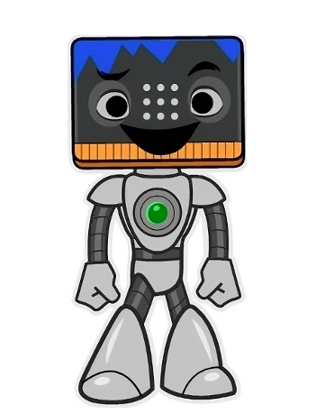

1. ¿Cómo suena la felicidad, tristeza o sorpresa?

¡Estás hecho un/a experto/a de la codificación!
Ahora, te propongo dos retos a partir de lo que has aprendido.
Hazlo con otro/a compañero/a o grupos de 3. Siempre es más fácil con ayuda.
Puedes consultar a Lumen si no sabes cómo continuar, pero ¡inténtalo antes!
¡Mucho ánimo!